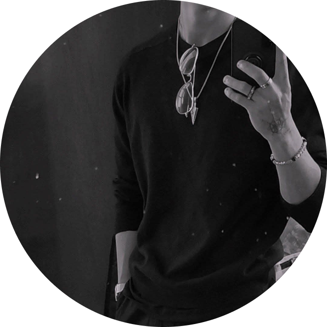

Eduardo Aguilera

Sobre mí
Estudié Animación y Arte Digital, me interesa crear propuestas visuales que transmitan ideas de forma clara y atractiva. Me gusta experimentar con diferentes estilos y herramientas para desarrollar proyectos originales. Busco crecer profesionalmente mientras aporto compromiso, iniciativa y una visión creativa en cada trabajo.
Experiencia
Asistente de Producción y Postproducción: Participó en proyectos de animación y contenido audiovisual, brindando apoyo en procesos de edición, corrección de color y definición de lineamientos visuales, contribuyendo a la coherencia estética de cada pieza.
Creador de Videojuegos: Colaboró en el desarrollo de experiencias interactivas, participando en el diseño de mecánicas, construcción de entornos y definición del estilo visual. Integró elementos narrativos y gráficos para lograr una experiencia inmersiva y coherente.
Animador Digital: Intervino en la conceptualización y desarrollo visual de un entorno sensorial orientado a la relajación. Realizó animaciones y propuestas gráficas alineadas con la identidad del proyecto, asegurando una experiencia visual consistente y atractiva.
Creador de Videojuegos: Colaboró en el desarrollo de experiencias interactivas, participando en el diseño de mecánicas, construcción de entornos y definición del estilo visual. Integró elementos narrativos y gráficos para lograr una experiencia inmersiva y coherente.
Animador Digital: Intervino en la conceptualización y desarrollo visual de un entorno sensorial orientado a la relajación. Realizó animaciones y propuestas gráficas alineadas con la identidad del proyecto, asegurando una experiencia visual consistente y atractiva.
Formación
Licenciatura en Animación y Arte Digital
Universidad Tecnológica de México (UNITEC)
2023 - Actualidad
Universidad Tecnológica de México (UNITEC)
2023 - Actualidad
Herramientas
- • Adobe Illustrator
- • Adobe Photoshop
- • Adobe Premiere Pro
- • Autodesk Maya
- • Unity
Contacto